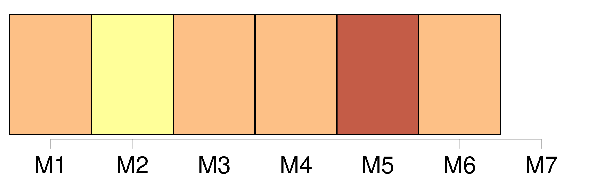

Longueur nb maillons : 6 mentions |
 |
[On] la trouve du Tchad jusqu'en Afrique du Sud. Mais c'est principalement au Kenya, en Tanzanie, au Botswana et au Niger que [l'on] peut rencontrer des troupeaux de girafes. [78 phrases] D’ après l’ union internationale pour la conservation de la nature ( UICN ), [on] comptait 155 000 girafes vivant dans la nature en 1985 contre 97 500 en 2015, ce qui constitue une baisse des effectifs de l’ espèce d’ environ 40 % au cours des 30 dernières années. [3 phrases] [On] a estimé que la population totale des girafes représente en 2010 110 000 à 150 000 animaux, contre un million au milieu des années 1990. [17 phrases] • • L'expression « peigner la girafe » signifie ne rien faire ou perdre [son] temps. [1 phrases] [On] sait cependant que lorsqu'une girafe ( nommée Zarafa ) fut offerte à Charles X par le pacha d'Égypte, celle -ci eut un gardien personnel, qui répondit à ses supérieurs lui reprochant de ne rien faire, qu'il était fort occupé à peigner la girafe. |
|
Il est possible de télécharger la ressource sur la page Ortolang |
Si vous avez des questions ou vous voyez des erreurs, merci d'envoyer un mail à silvia.federzoni89@gmail.com |